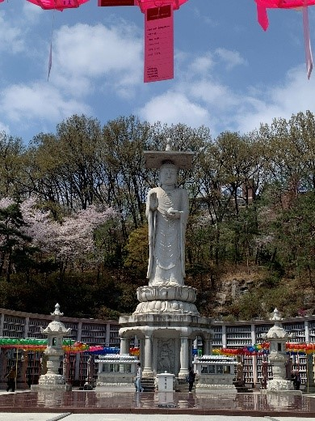
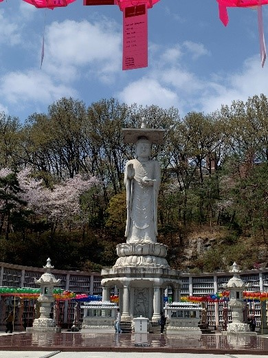

South Korea had been on my travel list for a long time. I’d always been fascinated by its mix of old and new — ancient palaces next to neon-lit gaming cafés, the smell of street food drifting through modern city streets, and the rhythm of a culture that feels both futuristic and deeply traditional.
This spring, I finally spent two unforgettable weeks traveling through the country with a friend — from Seoul’s bustling neighbourhoods to Gyeongju’s historic treasures, Busan’s coastal charm, and Jeonju’s traditional beauty.
This blog tells the story of that trip:
- what we did
- what we ate
- where we stayed
- and the small moments in between
At the same time, I hope it can serve as inspiration and a practical reference for anyone planning their own journey through South Korea.
How to use this Blog
This post is structured as a day-by-day itinerary, but you don’t have to follow
it exactly.
You can:
- Follow the full two-week route (Seoul → Gyeongju → Busan → Jeonju → Seoul)
- Pick single cities (e.g. just Busan or just Jeonju) and use the relevant days
- Use the “Things to do” / “Where to eat” sections to build your own schedule
Trip Snapshot
Duration: 14 days
Route: Seoul → Gyeongju → Busan → Jeonju → Seoul
Best for: Young adults (20–30) who want a mix of culture, food, nightlife,
gaming, and history
Rough structure:
- Days 1-5: Seoul (Insadong, Myeongdong, Hongdae, Gangnam, Seongsu)
- Days 6-7: Gyeongju (history + temples)
- Days 8-9: Busan (coastlines + culture)
- Days 10-11: Jeonju (hanok & food)
- Days 12-13: Seoul again (Hongdae & quiet corners)
- Day 14: Departure
Budget:
South Korea is not the cheapest place on earth, but as a Swiss person, it definitely feels
cheaper compared to Switzerland.
You can get a very good dinner for about 5–10 CHF, including drinks.
I spent about 700 CHF for two weeks in South Korea, which amounts to roughly
1,277,698 won.
I paid around 1,053 CHF for direct flights with Korean Air, and 600
CHF for all the hotels.
So my total expenses for these two weeks were around 2,500 CHF — and that was
with a very comfortable lifestyle.
When to visit:
We went in April, and I would highly recommend it because of the mild temperatures — usually around 15–25°C — and the overall pleasant weather. I would discourage visiting in the peak summer months because of the heat and humidity. That said, every season in South Korea has its own charm and atmosphere.
Transportation:
I recommend buying a T-Money card at the start of your trip.
It works for almost all buses and metros, and you can get one in most convenience stores.
If you need to catch a bullet train (KTX) from Seoul to Busan, the best option is to go to the
station one day before your trip and buy the ticket at the counter.
For navigation, use Google Maps and Kakao Maps — I recommend using both
because they sometimes show different routes.
Public transport can take you almost everywhere, and taxis are also available, although they are
not always the cheapest option.
Our train times with the KTX (bullet train):
- Seoul Station → Gyeongju Station: 2 h 20 min
- Gyeongju Station → Busan Station: 30 min
- Busan Station → Jeonju Station: 2 h 58 min
- Jeonju Station → Seoul Station: 1 h 59 min
Day-by-Day Itinerary
Day 1: Arriving in Seoul
We landed at Seoul Incheon Airport around 2 p.m. and caught a train to our
hotel in Insadong, a very central area of Seoul that is still relatively quiet.
It’s a great base because it’s close to historic sights like Gyeongbokgung
Palace, and not too far from Myeongdong,
which is busy and full of life day and night.
That afternoon and evening, we explored Myeongdong’s alleys, tried
Korean BBQ, and ended the night in a small local bar.
The energy of the city hit us instantly — loud, colourful, and alive.
- Wander the packed streets full of street food stalls and shops
- Explore Korean skincare and beauty stores
- Visit the Myeongdong Cathedral
Myeongdong Korean BBQ All You Can Eat Pig Company
🏨 Where we stayed:
Hotel Prima Seoul:
Hotel Prima Seoul: The hotel was very good — modern rooms, friendly staff, and even a coin laundry for our dirty clothes. The location was superb, so I would highly recommend it.

Day 2: Palaces and Hanok Villages
We started the morning exploring Bukchon Hanok Village, a neighbourhood full of
traditional Korean houses between Gyeongbokgung and
Changdeokgung Palaces.
Walking there felt like time-travel — from modern streets to old alleys and tiled roofs.
Even though it’s a cool place to visit, I was slightly disappointed. It felt more like a regular
neighbourhood than the fully “traditional” atmosphere I had expected, but it was still worth
seeing.
Later, we visited Gyeongbokgung and Changdeokgung Palaces, learning about Korea’s royal history and architecture. You can stroll around quite freely and there’s a lot of information to take in — from the Japanese occupation to the development of the palace complexes. There, you can also witness a traditional reenactment of the Joseon Dynasty’s royal guard-changing ceremony. Entry tickets cost 3’000 Won each.
In the afternoon, we went to the T1 Basecamp in Hongdae, an esports center
popular among gaming enthusiasts.
We had a light lunch, played a few matches, and enjoyed the vibrant atmosphere of the esports
community.
Later, we explored the Insadong area near our hotel and discovered a hidden gem
of a restaurant — Insadong Maneul Bossam.
They served traditional set meals with Bossam (boiled pork belly) and spring onion pancakes,
which were absolutely delicious.
Paired with a savoury chestnut makgeolli, it was the perfect way to end the evening.
- Visit Gyeongbokgung and Changdeokgung Palaces (must-sees for first-time visitors)
- Walk through Bukchon Hanok Village
- Experience Korean gaming culture at T1 Basecamp in Hongdae
Insadong Maneul Bossam
Day 3: The DMZ Experience and Yeouido Hangang Nights
Our third day was something completely different: the DMZ Tour near the North Korean border. It was an emotional and educational experience — learning about the history and tension between the two Koreas left a deep impression. We took a guided tour from GetYourGuide, which I highly recommend.
Back in Seoul, we relaxed at Yeouido Hangang Park, where a street food festival was happening. Locals picnicked by the river, couples biked past, and live music played as the sun set. We ate corn dogs, tteokbokki, fried chicken, and for dessert some delicious hotteok.
- DMZ Tour
- Yeouido Hangang Park
- Banpo Bridge Moonlight Rainbow Fountain
- Korean corn dog
- Tteokbokki (spicy rice cakes)
- Korean fried chicken
- Hotteok (sweet pancakes)
Day 4: Namsan Hike & Seongsu Exploration
We hiked up to N Seoul Tower in the morning. The trail was calm and green, offering amazing views once we reached the top. We grabbed a quick breakfast at Starbucks in the tower and used the time to plan the rest of our day.
Afterwards, we walked back through the Namsan Botanical Garden, enjoyed the
relaxed atmosphere, and even chatted with a Korean grandpa about Seoul.
Then we took the subway towards Seongsu.
Seongsu is full of indie cafés, art shops, and street murals. We had lunch at Seongsu
Darak, explored Seoul Forest Park full of cherry blossoms and the
deer corral,
and then went shopping for some vintage clothing (which was a bit challenging for my rather
large build).
We ended the day with ramen at Nirou Mian Guan, a place with multiple Michelin
awards.
- Walk through the forest up to N Seoul Tower
- Explore the Seongsu area: cafés, shops, Seoul Forest
Seongsu Darak
Nirou Mian Guan
Day 5: Gangnam Style: Temples & Tombs
We spent the day in Gangnam, Seoul’s modern and stylish district. After a late breakfast at Cheonsang Gaok, where we enjoyed their delicious salt bread. We decided to skip lunch.
The contrast throughout the day was striking: we began at Bongeunsa Temple, a serene space surrounded by skyscrapers, lush nature, and an impressive standing Buddha statue. We then visited the Starfield Library inside the COEX Mall — a dreamlike place for book lovers — and made a quick stop at the Gangnam Style statue, an iconic photo spot just outside the mall.
In the afternoon, we walked through the Seolleung and Jeongneung Royal Tombs, a peaceful and green historic site hidden in the middle of the city. For dinner, we went to Oncheonjip, a restaurant well known for its excellent shabu shabu.
- Bongeunsa Temple
- Starfield Library (COEX Mall)
- Seolleung and Jeongneung Royal Tombs
Cheonsang Gaok
Oncheonjip
 

Day 6: History Comes Alive in Gyeongju
Early in the morning, we took the train to Gyeongju, often called Korea’s
“museum without walls.” The city is full of historical treasures.
We began at the Gyeongju National Museum, which presents Korea’s history from
the Bronze Age to the Unified Silla period, displaying ancient artifacts, statues, and massive
ceremonial bells.
We continued to Banwolseong, a forested archaeological site where many ancient artifacts have been discovered. This area includes the remains of the old Silla fortress and offers a peaceful walk through nature.
Another stop was Cheomseongdae Observatory, one of Korea’s most famous historic landmarks. Surrounded by flower fields, it looks almost like a giant stone furnace rising from the ground.
We also explored the Tomb of King Michu of Silla, part of a royal burial complex from the Silla era. You can even enter one of the tombs to see the interior structure, which was incredibly impressive.
Later, we saw Woljeonggyo Bridge, which was another highlight of the day. We also visited this in the evening, and I can only recommend it — the bridge glows beautifully in the shimmering lights, creating a perfect photo spot. You can even cross the river on stepping stones and admire the view from below.
From there, we visited Wolji Pond, known for its beautiful pavilions, pagodas,
and surrounding nature.
I especially recommend visiting in the evening — the entire area is illuminated in a mysterious,
atmospheric light accompanied by soft music.
It was one of my favourite days — a perfect blend of nature, history, and culture.
- Gyeongju National Museum
- Wolji Pond
- Woljeonggyo Bridge
- Tomb of King Michu of Silla
- Cheomseongdae Observatory
Yangbanjib
🏨 Where we stayed:
Yettle Hanok Stay:
The hanok was fantastic — the owner helped us plan our two days in Gyeongju and even gave us a map to find our way around. It was comfortable, traditional, and I would highly recommend staying here.
Day 7: Temples and Tranquility
We continued exploring Gyeongju with visits to Bulguksa Temple and Seokguram Grotto, both recognized as UNESCO World Heritage Sites. While you’re there, you can also try Hwangnam-ppang, a local Gyeongju specialty made from red bean paste and soft pastry.
To reach Seokguram Grotto, you can either take the shuttle bus up the mountain or walk the entire way. I highly recommend taking the bus up and then walking back down afterward — the trail is peaceful and offers beautiful views.
Later, we visited Jungdo Tower, which rises impressively over the surrounding village. Afterwards, we walked around the serene Bomun Lake and took a break at Page 9 Café, a perfect spot to rest and enjoy the view.
In the evening, we took the bus back to central Gyeongju. We wandered through the Gyochon Traditional Village, filled with restaurants, tea houses, and small shops — a great place to rest, eat, and explore traditional Korean culture. Then we had dinner at Tiger Katsu, a restaurant known for serving delicious Japanese-style pork katsu.
- Bulguksa Temple
- Seokguram Grotto
- Bomun Lake
Page 9 Café
Tigerkatsu
Day 8: Welcome to Busan
The next morning, we took the train to Busan and checked into our hotel in the Sinchang-dong district. We spent the first part of the day at Haeundae Beach and explored the nearby Haeundae Traditional Market, which was full of snacks and local specialties.
For a spectacular view of the coastline, we visited Busan X the SKY and went up to the 101st floor, nearly 400 meters above ground. The panorama from up there was incredible.
Later, we rode the Haeundae Blueline Park train for stunning coastal views before heading to the Haedong Yonggungsa Temple. This temple is built directly on the cliffs overlooking the sea, making it one of the most unique temple settings in Korea.
In the evening, we returned to our district and had dinner at a traditional restaurant, where we enjoyed a comforting kimchi stew.
- Haeundae Beach
- Busan X the SKY
- Haedong Yonggungsa Temple
Sulodang
🏨 Where we stayed:
GNB Hotel:
The hotel was quite good — not exceptional, but in a convenient location and at a great price.
Day 9: Culture and Coastlines
The next day was all about culture and colour. We started early and took a bus to Taejongdae Park, where we spent the morning walking through nature and enjoying incredible views of the cliffs and the ocean. We also grabbed a few snacks near the lighthouse before heading back.
In the afternoon, we visited Gamcheon Culture Village, a place with a completely different atmosphere from the rest of Busan. It’s artistic, vibrant, and slightly chaotic in a way that feels both nostalgic and unique. We stopped at DUF Coffee for an iced latte during our walk, which was a great break in the middle of all the exploring.
Part of Gamcheon’s charm comes from its history — the village was shaped by families who settled there during difficult times, including refugees from the North, which gives the area a special cultural background.
In the evening, we went to BIFF Square and had dakgalbi, which ended up being one of my favourite meals of the entire trip.
- Gamcheon Culture Village
- Taejongdae Park
- BIFF Square
DUF Coffee
Dakgalbi
Day 10: Jeonju’s Hanok Beauty
The next morning, we took the train to Jeonju, which took about two hours since there is no direct connection from Busan. Jeonju is famous for its Hanok Village and rich food culture, so we were excited to explore.
Our first stop was Gyeonggijeon Shrine, where you can walk around freely and enjoy the peaceful atmosphere and traditional architecture. For lunch, we tried a viral spot called Goof-Off, known for its Italian–Korean fusion dishes, which turned out to be surprisingly good.
In the afternoon, we visited Jeondong Cathedral and Nambu Market, then wandered through streets filled with people wearing traditional hanbok, which gave the whole area a lively and festive feeling.
For dinner, we chose a small, very traditional family-run restaurant. It was just a father, mother, and their daughter running the place — and they served some truly delicious home-style cold noodles.
- Gyeonggijeon Shrine
- Walk through the Hanok Village
- Explore Nambu Market
Goof-Off
Ucheon Kudzu
🏨 Where we stayed:
And Spring:
The And Spring Airbnb was fantastic. It was quite small, but the location makes up for it, you can’t be more in the centre of Jeonju. Since you won’t spend much time in the room anyway, it’s perfect. I highly recommend this place.
Day 11: Hikes and Hidden Corners
Today, we hiked Gilinbong Mountain, where the fresh air and peaceful nature made the climb incredibly enjoyable. From the top, you get a beautiful view over the Hanok Village, which feels especially unique from above.
After the hike, we explored the ruins of Donggosanseong Fortress. The site is quite large, and you can still see sections of the old walls scattered across the mountain, giving a strong sense of the area’s historical scale.
Later, we walked around Ajung Lake and relaxed with matcha cheesecake and an iced matcha latte. The matcha was sourced from Jeju Island, which made the experience even more special.
In the afternoon, we continued through Jaman Mural Village to Omokdae, a viewpoint that offers a closer look over the Hanok Village and surrounding scenery. Afterwards, we walked along the river and had a friendly conversation with some locals, who recommended a place for dinner.
Before eating, we stopped by VIBRA, a vintage shop where we found some great pieces. For dinner, we went to Ondam, a restaurant known for its premium Korean pork BBQ — and it was absolutely fantastic.
- Gilinbong Mountain
- Ajung Lake
- Jaman Mural Village & Omokdae
Ondam
Ajuleu

Day 12: Hongdae Nights
Back in Seoul, we explored Hongdae, an area known for its street performances, vibrant art scene, and lively nightlife. We also visited Haneul Park, famous for its vast open fields and panoramic views over the city.
For lunch, we stopped by a Michelin Guide–listed ramen restaurant, which was absolutely outstanding. Afterwards, we spent some time walking along the Hongdae Shopping Street, browsing the shops and soaking up the energetic atmosphere.
In the evening, we joined a pub crawl and met new friends — Lydia from Taiwan and Bruno from the Netherlands. We visited four different clubs and bars together and ended up dancing until 3 a.m.
- Hongdae Shopping Street
- Haneul Park
- Pub crawl / nightlife
Dokkaebi Party House
KB2
La Bamba
Playground Pub
Oreno Ramen
🏨 Where we stayed:
Arirang Hill Hotel Dongdaemun:
The hotel was excellent — friendly staff and a surprisingly large room for Seoul. The only downside was the location, which wasn’t within walking distance of most places I wanted to visit. However, with a metro station right around the corner, it wasn’t a big issue.
Day 13: Calm Corners of Seoul
After a late morning, I visited the Cheongun Literature Library and the Hill of Poet Yun Dong-ju — quiet, reflective places that reveal a calmer and more contemplative side of the city. Near these two sights, there is an art museum that blends traditional and modern styles. Seokpajeong features impressive works of art as well as a beautiful garden and a small temple area at the top.
Afterwards, I took the bus to Café Pokpo, which offers a variety of drinks and snacks. The highlight is the view: you can sit outside and watch the waterfall flowing directly behind the café.
I finished the day gaming with Bruno at the T1 Base Camp. Bruno had an account that allowed us to play on the Korean server — something usually not possible due to South Korean gaming regulations — which made the experience even more fun and unique.
Later in the evening, I met Lydia for dinner, and we enjoyed some incredible soba noodles together.
- Cheongun Literature Library
- Seokpajeong
- Café Pokpo
Cafe Pokpo
Kandasoba Hongdae
Day 14: Farewell
We almost missed our flight to Zurich because we overslept — classic. With some quick thinking and a taxi driver who must have been secretly training for Formula 1, we made it to Incheon Airport just in time. We were so late that we couldn’t even check in our luggage, so we had to drag everything through security. I ended up losing a few souvenirs and my razor blades, which security definitely didn’t appreciate.
Still, we somehow reached the gate with only five minutes left before boarding. Completely out of breath and sweating, we collapsed into our seats as the plane took off. Watching Seoul shrink beneath the clouds, it hit me how much these two weeks meant.
South Korea isn’t just a place you visit — it’s a place that stays with you.

Final Thoughts
These two weeks in South Korea combined everything I love about travel:
- History and culturethat you can feel in the streets
- Foodthat you still think about months later
- People and momentsthat turn into stories you keep telling
If you’re in your twenties, curious about East Asia, and open to mixing palaces, gaming cafés, beaches, bars, temples, and street food, South Korea is the perfect place to start. If I had more time, I would have invested 1 week on Jeju Island, visiting the mountains and the Beaches. Aside from that, i would also have liked to have more time in Seoul, so I could do some daytrips from there. If you’re in South Korea for the first time, I would recommend staying flexible — things will never go exactly as planned, so just walk around, explore, and let things happen naturally. And be sure to have some cash on you: most places accept card, but some remote shops only accept cash.